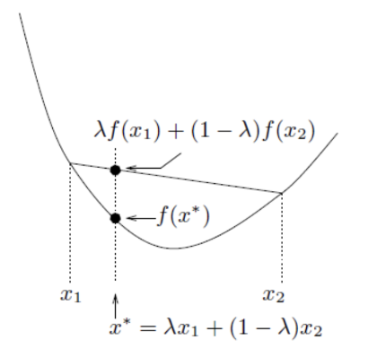
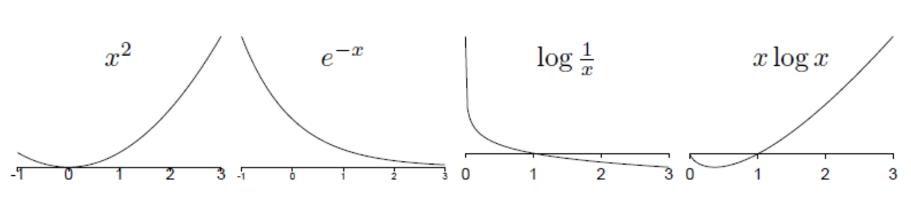

Probability, Entropy, Inference
Probabilities and Ensembles
ensemble
Ensemble $X=(x,A_x,P_x)$
outcome $x$
set of possible values $A_x=\{a_1,a_2,...a_i,a_I\}$ , 각각의 확률 $P_X=\{p_1,p_2,...,p_I\}$ abbreviation : $P(x=a_i)$ 를 $P(a_i),P(x)$ 로 씀
probability of subset
T가 $A_X$의 subset이면, $P(T)=P(x\in T)=\sum\limits_{a_i\in T}P(x=a_i)$
joint ensemble
joint ensemble $XY$ : outcome이 순서쌍 $x,y$
joint probability : $P(x,y)$ <- 쉼표 안붙여도 됨! $xy<=>x,y$
확률변수 X,Y가 독립일 필요는 없다.
marginal probability
joint probability에서 한 확률변수에 대한 summation으로 marginal probability를 얻을 수 있다
$$P(x=a_i)=\sum\limits_{y\in A_Y}P(x=a_i,y)$$conditional probability
$$P(x=a_i|y=b_j)=\frac{P(x=a_i,y=b_j)}{P(y=b_{j})}$$Chain rule (Product rule)
$$P(x,y|H)=P(x|y,H)P(y|H)=P(y|x,H)P(x|H)$$Sum rule
$$P(x|H)=\sum\limits_yP(x,y|H)=\sum\limits_yP(x|y,H)P(y|H)$$Bayes’ Theorem
$$P(y|x,H)=\frac{P(x|y,H)P(y|H)}{P(x|h)}$$Independence
r.v X,Y는 독립 if $P(x,y)=P(x)P(y)$
ensemble을 conditional probability의 collection으로 정의할 수 있다
The meaning of probability
두가지 정의가 있음
- random한 실험에서 outcome의 frequency <- circular random variable을 가정함
- degree of belief <- 보다 general한 정의 Bayesian probability를 assumption을 설명하는데 사용할 수 있고, assumption으로부터 inference를 할 수 있음
The Shannon information content of an outcome
random variable $X=(x,A_x,P)$의 outcome x에 대한 Shannon imformation content:
$$h(x)=log_{2} \frac{1}{P(x)}$$measured in bits 앞으로의 챕터에서 Shannon information content가 왜 $x=a_i$라는 event의 information content에 대한 measure로 적당한지 알아볼 것.
예시 : outcome e의 information content: 3.5, outcome z의 information content: 10.4
The entropy of an ensemble
r.v(ensemble) $X=(x,A_x,P)$에 대한 entropy는 outcome의 Shannon information content의 평균
$$H(x)=E_xh(x)=\sum\limits_{x\in A_X}P(x)log_{2} \frac{1}{P(x)}$$- entropy 또한 measured in bits
- $H(x), H(p)$ 모두 ensemble의 entropy라는 뜻, 이때 p는 probability vector
- X의 entropy를 다른말로 X의 ==uncertainty==라고도 한다
- 밑 2는 생략하고 그냥 log로 씀
properties of entropy
- $H(x)\geq 0$ (하나의 i에 대해 $p_i=1$일 때 등호성립)
- p가 uniform ($p_i=p_j$)일 때 entropy가 최대가 된다 ==$H(X)\leq log(|A_x|)$== with equality if $p_{i}= \frac{1}{|A_{x}|}$ for all i |Ax| 는 set의 원소의 수
Decomposability of the entropy
entropy function은 recursive property를 만족한다 ensemble $X=\{x,A_x=\{x_1,x_2,...,x_I\},\mathbf{p}=\{p_1,p_2,...,p_I\}\}$ 라 하면, $A_x$를 $x_1$이 일어날 확률, 일어나지 않을 확률로 쪼개고 $x_1$이 일어나지 않은 경우에 대해 다시 entropy를 구하고,.. 반복
$$H(\mathbf{p})=H(p_1,1-p_1)+(1-p_1)H(\frac{p_2}{1-p_{1}},\frac{p_3}{1-p_{1}},...,\frac{p_I}{1-p_{1}})$$joint entropy
$$H(X,Y)=E_{x,y}h(x,y)=\sum\limits_{x,y\in AxA_y}P(x,y)log\frac{1}{P(x,y)}$$교환법칙이 성립 $H(X,Y)=H(Y,X)$
theorem : joint entropy와 독립
X,Y의 joint entropy는 두 rv X,Y가 독립일 때만 additive하다 $H(X,Y)=H(X)+H(Y)-H(X+Y)$ iff $P(x,y)=P(x)P(y)$
cross entropy
cross entropy of two distributions P,Q over $A_x$
$$H(P;Q)=E_{x}h_Q{x}=\sum\limits_{x\in A_x}P(x)log\frac{1}{Q(x)}=-\sum\limits_{x\in A_x}P(x)log{Q(x)}$$property
- 교환법칙이 성립하지 않음: $H(P;Q) \neq H(Q;P)$
- non-negative : $H(P.Q)\geq 0$
- 그냥 entoropy보다 cross entropy가 크다: $H(P;Q) \geq H(P)$
- H(P;Q)는 P=Q일때 최소
Gibbs’ inequaility
KL Divergence (relation entropy)
같은 $A_x$ 에 대해 정의된 두 probability distribution $P(x),Q(x)$ 의 KL divergence는
$$D_{KL}(P||Q)=\sum\limits_{x}P(x)log{\frac{P(x)}{Q(x)}}$$KL divergence는 symmetric하지 않다
theorem: Gibbs’ inequality
$$D_{KL}(P||Q) \geq 0$$P=Q일때 등호성립
KL divergence는 distance(=metric)이 아니다
distance
$d:X\times X \rightarrow [0,\infty]$ set $X \times X$에서 non-negative real set $[0,\infty)$ 으로 mapping하는 함수 d로, 다음의 조건을 만족해야함
- non-negativity
- $d(x,y)=0$ 이면 $x=y$
- symmetry
- triangle inequality
KL divergence에서는 두가지가 만족되지 않음
- holds by Gibbs'
- hold by Gibbs'
- symmetry not holds!
- triangle inequality not holds!
probability의 KL divergence인 경우 set X가 probability set인 P가 된다
Gibbs’ inequaility는 convexity로 보일 수 있다
Jensen’s inequality for convex functions
convex functions
내분점의 함숫값보다 함숫값의 내분점이 더 큰 함수  모든 $x_1,x_{2}\in (a,b)$ 와 $0 \leq \lambda \leq 1$ 에 대해 다음이 성립하는 함수 f(x)
$$f(\lambda x_{1}+(1-\lambda)x_{2} \leq \lambda f(x_1)+(1-\lambda)f(x_2) $${kind=link}
예) $x^2,e^x,e^{-x},log{\frac{1}{x}}(x>0),xlogx(x>0)$ 
{kind=link}
Jensen’s inequality
조건) f가 convex 함수이고 x가 random variable이면 내용) 함숫값의 expectation이 expectation의 함숫값보다 크다
$$E[f(x)]\geq f(E[x])$$r.v x가 constant일 때 등호 성립
Gibbs’ inequality를 Jensen’s inequaility를 이용해 보일 수 있다